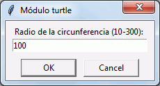
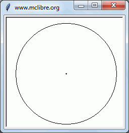
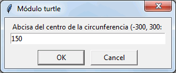
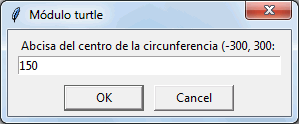
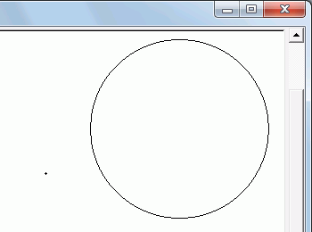

turtle (4) - 01 - Círculo
- Escriba un programa que solicite el radio del círculo (entre 10 y 300 píxeles) y lo dibuje centrado en el origen (sin usar la función circle() del módulo turtle). Defina una función circulo(radio) que dibuje el círculo a partir del radio:
 
Sugerencias:
- Dibuje un punto en el origen (independiente del círculo) para que se vea que el círculo está centrado en el origen.
- Para dibujar el círculo, se puede dibujar primero el semicírculo superior y después el semicírculo inferior.
- Para dibujar el semicírculo superior se puede ir calculando las coordenadas de los puntos de la circunferencia y moviendo la toruga de punto a punto.
- Las abcisas se pueden obtener mediante un bucle que vaya desde -radio hasta +radio. Las ordenadas se pueden calcular a partir de las abcisas.
- Escriba un programa que solicite el radio del círculo (entre 10 y 300 píxeles) y las coordenadas del centro /entre -300 y 300 píxeles) y lo dibuje. Defina una función circulo(x0, y0, radio) que dibuje el círculo a partir de las cordenadas del centro y del radio:

 


Sugerencias:
- Dibuje un punto en el origen (independiente del círculo) para que se vea que el círculo está situado correctamente.